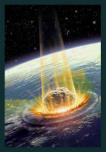

De: La Frikipedia, la enciclopedia extremadamente seria.
De: La Frikipedia, la enciclopedia extremadamente seria. De: La Frikipedia, la enciclopedia extremadamente seria.
| De la serie Países del planeta tierra: | |||||
| Antigua y Peluda | |||||
|---|---|---|---|---|---|
| |||||
| Lema: Legalize it | |||||
| Himno: Na, nana, nanana, na...
| |||||
| 
| |||||
| Capital | san yon | ||||
| Mayor ciudad | No hay ciudades. | ||||
| Lenguas oficiales | ingles | ||||
| Gobierno | Dictadura anarco-monárquica. | ||||
| presidente | Yao Ming | ||||
| Área | Por las Caribe. | ||||
| Población | 10 como mucho. | ||||
| Moneda | Papas fritas | ||||
| Zona horaria | 3'1416 | ||||
| Dominio Internet | .xxx | ||||
| Código telefónico | churro al 2020
| ||||
| ¿Quién no conoce Antigua y Barbuda? | |||||
Antigua y Barbuda, Vieja y Barbuda, Vieja y Fea, etecé y etecé, es una atlas que tendremos guardados felizmente tragando polvo en las estanterías de nuestras casetas. Habitada por algún que otro indio es uno de los destinos turísticos de tráfico de sexo del mundo (Los pederastas si saben donde está la roca)
Por ley, todos sus habitantes deben ser ancianos barbudos.
Se ve que, cuando Colón se tragó un par de litros de lápices comprando a los chinos tanques de combate y bombarderos. Aún tras el valeroso esfuerzo de los Antiguobarberudos con su presi Mariano Rajoy, los Arpañoles consiguieron entrar en ViejaYBarbuda y violaron todo ser y cabra viva. Miles de millones de años después, cuando Vieja y Barbuda ya tenía poder suficiente para derrotar al Imperio del Mal, decidieron conseguir su independencia gracias al tratado de Ojete, que les permitía destruir y quemar a su antojo países sin el permiso de Espiña
Vieja y Barbuda es miembro de la comunidad de potencias destructivas mundiales y miembro honorario de la U.U.E.E. El presidente de la Roca, en Vieja llamado Ñu, es elegido en un concurso de comparación de penes, costumbre heredada del Imperio Español, acto seguido se castraba, era violado por los demás concursantes y ya estaba considerado como Ñu. El Ñu tiene un poder absoluto sobre las cabras y las hormigas, siendo constantemente viol...oprimidas por el Ñu, que esto causó una revolución que masacró a miles de personas... pero esa es otra historia...A los veinte años el Ñu es obligado a abandonar el cargo, se mata, se les destripa y se les da de comer los intestinos a un ñu (de ahí viene el nombre, ¿eh?, ¿eh?, ¡¿EH?!)
¿Pero qué quieres que te diga? ¡¡Si es una puta roca abandonada de la mano de Diox!! ubicada al oeste norte del sur de la vecindad del chavo,limita con grecia y camboya. Justo a un lado de su pais hermano "Nueva y Rasurada".
| Fecha | Nombre en castellano | Nombre local | Notas | ||
|---|---|---|---|---|---|
| 1 de enero | Día de la Matanza | . | En este día se destripa al Ñu oficial. | ||
| 2 de febrero | Martes del Porrete | . | único día de la marihuana legalizada. | ||
| 3 de marzo | Día del Sexo | . | Capaces de procrear 5 niños al segundo. | ||
| 4 de abril | Día de la mierda | En este día, la antropofagia no está condenada con la muerte. | |||
| 5 de mayo | Día de la Mierda | . | En este día se ejecutan los niños procreados el 9 de Abril. | ||
| 1 de junio | dia del porno | . | dia en que todo lugareño ve porno gratis. | ||
| 6 de junio | Miércoles de la Droga | . | No está legalizada la María, pero sí la farlopa. | ||
| 11 de junio | Cumpleaños del Ñu. | . | Creado por el pacto de Ojete, permite que el Ñu pueda violar hormigas. | ||
| 7 de julio | Es San Fermín | . | |||
| 6 de agosto | Día del desmadre (con sexo y drogas) | . | dia donde tienes sexo con marihuana | ||
| 7 de septiembre | Día en honor a yao ming | . | todo lugareño admira a yao ming su lider | ||
| 7 de octubre | Fiesta Comercial | . | En este día es posible comercial (con normalidad) prostitutas y niñas. | ||
| 1 de noviembre | Día de la Fiesta Nacional | . | Otro día más. Independencia de Espiña en 2008 | ||
| 10 de diciembre | Día de los Negros. | . | Pues, no sé, no sé, no sé, no sé, no sé... | ||
| 25 de diciembre | Navidad | . | Se elige a un Father Noel que lidera un ejército de hormigas para destruir un país. | ||
| 26 de diciembre | Día de los Negros (pero los negros NEGROS) | .en este dia se le obliga al blanco a rebolcarse en barro | . | . |
| |
|---|
| Antigua y Barbuda | Bahamas | Barbados | Dominica | Granada | Guyana | Haití | San Cristóbal y ¿Nieves? | San Vicente y las Granadinas | Santa Lucía | Trinidad y Tobago | Uruguay | Venezuela |
Autor(es):